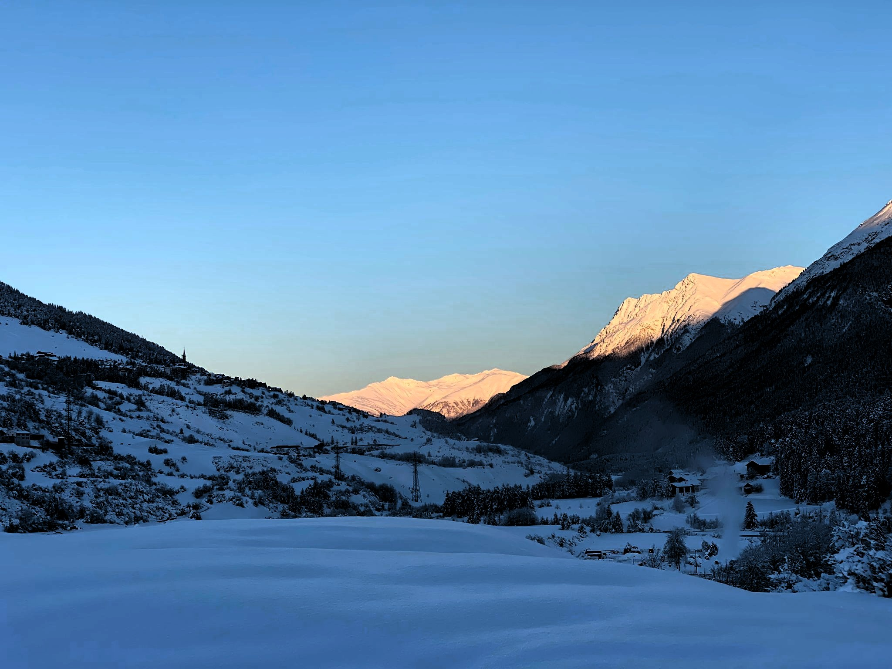

A agitação de uma estação de comboios moderna (SBB CFF FFS), com o brilho azul a realçar a plataforma 3C, pronto para levar passageiros à próxima aventura alpina.
O espírito natalício ou de inverno na Suíça: uma rua à noite coberta de neve, com decorações luminosas em forma de estrela a brilhar sob a iluminação pública.
Um vislumbre da realidade do inverno: uma espessa camada de neve acumulada num parapeito, destacando o frio acolhedor sentido pelos pés calçados em casa.
Uma paisagem de inverno em tons de cinzento e branco, capturando a vastidão de um vale alpino sob um céu nublado, realçando a solidão e a majestade da natureza.
O calor dourado do sol da manhã ou do entardecer toca os picos das montanhas, contrastando com o campo verdejante no vale, capturando um momento de paz ao ar livre.
A vasta e verde paisagem alpina, revelando o charme discreto de uma vila aninhada no vale sob um céu de verão com nuvens esparsas. Uma estrada sinuosa convida à exploração.
A beleza serena do inverno: montanhas e vales cobertos de neve, banhados pela luz suave do nascer ou pôr do sol, criando um cenário de cores frias e quentes.
Uma rua de paralelepípedos à noite, iluminada magicamente por uma luz central, dando um ar misterioso e antigo à paisagem urbana.
O luxo de relaxar com uma vista de tirar o fôlego: um jacuzzi exterior rústico, perfeitamente posicionado para desfrutar da paisagem alpina nevada.
Uma encantadora vila alpina aninhada na floresta, com a torre da igreja a sobressair, cercada pela densa vegetação das montanhas. O contraste entre a arquitetura e a natureza.
Um momento de contemplação felina. Um gato cinzento observa a paisagem montanhosa sob um céu dramático, com a bandeira suíça a flutuar ao vento.
A majestade e o mistério das montanhas. Um pico rochoso semi-oculto por nuvens baixas e envolto em névoa, com florestas densas a cobrir o primeiro plano.
Um momento de descanso. Um copo refrescante de bebida vermelha em primeiro plano, com a arquitetura tradicional e a paisagem alpina a servirem de pano de fundo num dia de sol.
A luz da manhã a filtrar-se através de cortinas translúcidas, criando um padrão acolhedor de sombra e luz. Uma visão serena do início de um dia suíço.
Um entardecer mágico sobre o vale. O céu em tons suaves de rosa e azul, e as luzes da vila a acenderem-se, destacando o contorno escuro da torre da igreja.
A arquitetura alpina rodeada por um jardim bem cuidado. Um caminho pavimentado serpenteia pela relva verde, ligando os edifícios de cor amarela e branca.
Uma cena mais urbana num dia de chuva. Pessoas a passar junto à loja Coop, com o asfalto molhado a refletir a luz e as montanhas nubladas no horizonte.
Uma vasta vista panorâmica do vale, com a vila e a igreja em destaque. As árvores verdes exuberantes em primeiro plano enquadram as montanhas azuis distantes sob um céu parcialmente nublado.
Um contraste vibrante entre o verde da relva e o azul intenso do céu, enquadrando os picos imponentes. As margaridas no primeiro plano adicionam um toque de beleza natural e frescura.